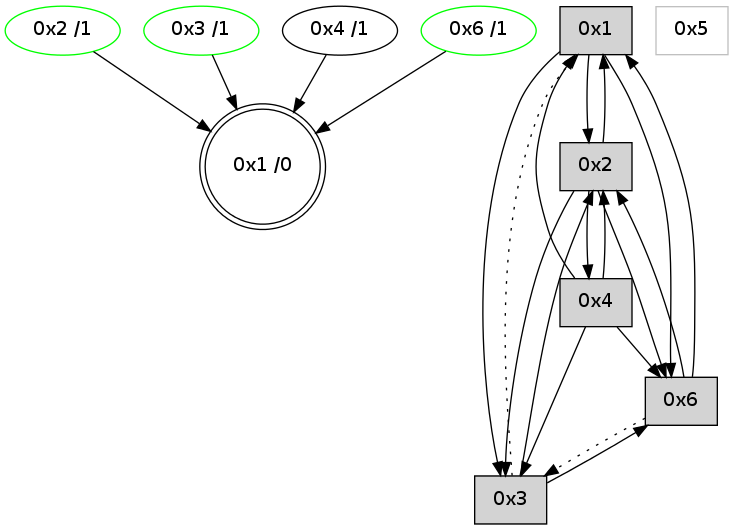

>> << IDX [start] -100 -25 -5 +0 +5 +25 +100 [730.007683992]
 Previous packets
----------------------------------------------------------------------
725.024971 beacon01(adaf) #0 coord=01,02,05,03,04,06 cycle=432.0ms assoc
-- color-indic=0 64 6e 33
725.034931 beacon02(adaf) #0 coord=01,02,05,03,04,06 cycle=432.0ms assoc 64 3f cc
725.044932 beacon05(adaf) #0 coord=01,02,05,03,04,06 cycle=432.0ms assoc 64 99 e6
725.054935 beacon03(adaf) #0 coord=01,02,05,03,04,06 cycle=432.0ms assoc 64 05 c2
725.064932 beacon04(adaf) #0 coord=01,02,05,03,04,06 cycle=432.0ms assoc 64 a3 e8
725.074932 beacon06(adaf) #0 coord=01,02,05,03,04,06 cycle=432.0ms assoc 64 d7 f4
725.086241 [STC(1) #0.35 to-color d=0]
725.090274 [Hello(2): seq=1018 sym=4,6,1,3 sysInfo= stat=4:1,0,1,0/6:10,0,3,2/1:3,0,10,0/3:1,0,0,0]
----------------------------------------------------------------------
725.517078 beacon01(adaf) #0 coord=01,02,05,03,04,06 cycle=432.0ms assoc
-- color-indic=0 64 22 83
725.527039 beacon02(adaf) #0 coord=01,02,05,03,04,06 cycle=432.0ms assoc 64 73 7c
725.537040 beacon05(adaf) #0 coord=01,02,05,03,04,06 cycle=432.0ms assoc 64 d5 56
725.547041 beacon03(adaf) #0 coord=01,02,05,03,04,06 cycle=432.0ms assoc 64 49 72
725.557040 beacon04(adaf) #0 coord=01,02,05,03,04,06 cycle=432.0ms assoc 64 ef 58
725.567041 beacon06(adaf) #0 coord=01,02,05,03,04,06 cycle=432.0ms assoc 64 9b 44
725.578975 [Hello(4): seq=528 sym=3,6,1,2 sysInfo= stat=3:0,0,0,0/6:0,0,0,0/1:15,0,13,0/2:12,0,1,2]
725.582108 [STC(4)->1 #0.35 to-color d=1]
725.583708 [Hello(1): seq=427 sym=2,6 sysInfo= stat=2:14,0,6,7/6:2,0,2,3]
725.588264 PARSE ERROR************************
Traceback (most recent call last):
File "PacketAnalysis.py", line 167, in showOperaPacket
structPacket = OperaPacketParse.parsePacket(rawPacket)
File "../../pkg-python/HipSens/Core/OperaPacketParse.py", line 461, in parsePacket
return parseHelloMessage(data)
File "../../pkg-python/HipSens/Core/OperaPacketParse.py", line 109, in parseHelloMessage
sysInfo,stability,colorInfo = struct.unpack("!HBB", linkList[0:4])
error: unpack requires a string argument of length 4
48 1c 03 00 02 0e 00 02 02 06 02 00 01 00 06 00 53 04 00 02 00 00 4c 06 10 0b 09 01 00 00 53 6c
725.590968 [STC(3)->1 #0.35 stable,to-color d=1]
725.593239 [TreeStatus(3)-.->1 #0.35 stable child=1]
725.594379 [STC(6)->1 #0.35 stable,to-color d=1]
725.598263 [TreeStatus(6)-.->1 #0.35 stable child=1]
----------------------------------------------------------------------
726.009186 beacon01(adaf) #0 coord=01,02,05,03,04,06 cycle=432.0ms assoc
-- color-indic=0 64 e6 ec
726.019146 beacon02(adaf) #0 coord=01,02,05,03,04,06 cycle=432.0ms assoc 64 b7 13
726.029147 beacon05(adaf) #0 coord=01,02,05,03,04,06 cycle=432.0ms assoc 64 11 39
726.039146 beacon03(adaf) #0 coord=01,02,05,03,04,06 cycle=432.0ms assoc 64 8d 1d
726.049147 beacon04(adaf) #0 coord=01,02,05,03,04,06 cycle=432.0ms assoc 64 2b 37
726.059149 beacon06(adaf) #0 coord=01,02,05,03,04,06 cycle=432.0ms assoc 64 5f 2b
726.070844 [Hello(2): seq=1019 sym=4,6,1,3 sysInfo= stat=4:2,0,2,0/6:10,0,4,3/1:4,0,10,0/3:1,0,1,1]
----------------------------------------------------------------------
726.501294 beacon01(adaf) #0 coord=01,02,05,03,04,06 cycle=432.0ms assoc
-- color-indic=0 64 c3 d1
726.511255 beacon02(adaf) #0 coord=01,02,05,03,04,06 cycle=432.0ms assoc 64 92 2e
726.531255 beacon03(adaf) #0 coord=01,02,05,03,04,06 cycle=432.0ms assoc 64 a8 20
726.541256 beacon04(adaf) #0 coord=01,02,05,03,04,06 cycle=432.0ms assoc 64 0e 0a
726.562675 [Hello(1): seq=428 sym=2,6 sysInfo= stat=2:15,0,6,7/6:3,0,3,4]
726.566404 [Hello(6): seq=443 sym=2,1 asym=3 sysInfo=hasWarning stat=2:12,0,0,1/1:7,0,13,0/3:0,0,0,0]
726.568337 [Hello(4): seq=529 sym=3,6,1,2 sysInfo= stat=3:0,0,1,1/6:0,0,1,1/1:0,0,13,0/2:13,0,1,2]
----------------------------------------------------------------------
726.993402 beacon01(adaf) #0 coord=01,02,05,03,04,06 cycle=432.0ms assoc
-- color-indic=0 64 07 be
727.003364 beacon02(adaf) #0 coord=01,02,05,03,04,06 cycle=432.0ms assoc 64 56 41
727.013363 beacon05(adaf) #0 coord=01,02,05,03,04,06 cycle=432.0ms assoc 64 f0 6b
727.023363 beacon03(adaf) #0 coord=01,02,05,03,04,06 cycle=432.0ms assoc 64 6c 4f
727.033363 beacon04(adaf) #0 coord=01,02,05,03,04,06 cycle=432.0ms assoc 64 ca 65
727.043363 beacon06(adaf) #0 coord=01,02,05,03,04,06 cycle=432.0ms assoc 64 be 79
727.055080 [Hello(2): seq=1020 sym=4,6,1,3 sym= sysInfo= stat=]
----------------------------------------------------------------------
727.485509 beacon01(adaf) #0 coord=01,02,05,03,04,06 cycle=432.0ms assoc
-- color-indic=0 64 4b 0e
727.495470 beacon02(adaf) #0 coord=01,02,05,03,04,06 cycle=432.0ms assoc 64 1a f1
727.505470 beacon05(adaf) #0 coord=01,02,05,03,04,06 cycle=432.0ms assoc 64 bc db
727.515470 beacon03(adaf) #0 coord=01,02,05,03,04,06 cycle=432.0ms assoc 64 20 ff
727.525470 beacon04(adaf) #0 coord=01,02,05,03,04,06 cycle=432.0ms assoc 64 86 d5
727.535472 beacon06(adaf) #0 coord=01,02,05,03,04,06 cycle=432.0ms assoc 64 f2 c9
727.547172 [Hello(4): seq=530 sym=3,6,1,2 sysInfo= stat=3:0,0,1,1/6:0,0,1,1/1:0,0,13,0/2:14,0,1,2]
727.550844 [Hello(3): seq=528 sym=2,6 asym=1 sysInfo=hasWarning stat=2:13,0,0,1/6:0,0,1,1/1:1,0,9,0]
727.553222 [Hello(1): seq=429 sym=2,3,6 sysInfo= stat=2:0,0,6,7/3:0,0,0,0/6:4,0,3,4]
727.556249 [STC(1) #0.36 to-color d=0]
----------------------------------------------------------------------
727.977617 beacon01(adaf) #0 coord=01,02,05,03,04,06 cycle=432.0ms assoc
-- color-indic=0 64 8f 61
727.987578 beacon02(adaf) #0 coord=01,02,05,03,04,06 cycle=432.0ms assoc 64 de 9e
727.997578 beacon05(adaf) #0 coord=01,02,05,03,04,06 cycle=432.0ms assoc 64 78 b4
728.007578 beacon03(adaf) #0 coord=01,02,05,03,04,06 cycle=432.0ms assoc 64 e4 90
728.017578 beacon04(adaf) #0 coord=01,02,05,03,04,06 cycle=432.0ms assoc 64 42 ba
728.027578 beacon06(adaf) #0 coord=01,02,05,03,04,06 cycle=432.0ms assoc 64 36 a6
728.039118 [STC(4)->1 #0.36 to-color d=1]
728.043019 [STC(6)->1 #0.36 stable,to-color d=1]
728.045110 [Hello(2): seq=1021 sym=4,6,1,3 sysInfo= stat=4:2,0,2,0/6:12,0,4,3/1:6,0,11,0/3:3,0,1,1]
728.048237 [STC(2)->1 #0.36 stable,to-color d=1]
728.049894 [TreeStatus(6)-.->1 #0.36 stable child=1]
728.053861 [TreeStatus(2)-.->1 #0.36 stable child=1]
----------------------------------------------------------------------
728.469725 beacon01(adaf) #0 coord=01,02,05,03,04,06 cycle=432.0ms assoc
-- color-indic=0 64 c2 66
728.479685 beacon02(adaf) #0 coord=01,02,05,03,04,06 cycle=432.0ms assoc 64 93 99
728.489686 beacon05(adaf) #0 coord=01,02,05,03,04,06 cycle=432.0ms assoc 64 35 b3
728.499686 beacon03(adaf) #0 coord=01,02,05,03,04,06 cycle=432.0ms assoc 64 a9 97
728.509688 beacon04(adaf) #0 coord=01,02,05,03,04,06 cycle=432.0ms assoc 64 0f bd
728.519687 beacon06(adaf) #0 coord=01,02,05,03,04,06 cycle=432.0ms assoc 64 7b a1
728.531376 [Hello(4): seq=531 sym=3,6,1,2 sysInfo= stat=3:1,0,1,1/6:0,0,2,2/1:1,0,14,0/2:15,0,2,3]
728.534142 [Hello(1): seq=430 sym=2,3,6 sysInfo= stat=2:1,0,7,8/3:0,0,1,0/6:4,0,4,5]
----------------------------------------------------------------------
728.961833 beacon01(adaf) #0 coord=01,02,05,03,04,06 cycle=432.0ms assoc
-- color-indic=0 64 06 09
728.971793 beacon02(adaf) #0 coord=01,02,05,03,04,06 cycle=432.0ms assoc 64 57 f6
728.981794 beacon05(adaf) #0 coord=01,02,05,03,04,06 cycle=432.0ms assoc 64 f1 dc
728.991796 beacon03(adaf) #0 coord=01,02,05,03,04,06 cycle=432.0ms assoc 64 6d f8
729.001795 beacon04(adaf) #0 coord=01,02,05,03,04,06 cycle=432.0ms assoc 64 cb d2
729.011795 beacon06(adaf) #0 coord=01,02,05,03,04,06 cycle=432.0ms assoc 64 bf ce
729.023495 [Hello(2): seq=1022 sym=4,6,1,3 sysInfo= stat=4:2,0,2,0/6:13,0,4,3/1:7,0,11,0/3:3,0,1,1]
----------------------------------------------------------------------
729.453940 beacon01(adaf) #0 coord=01,02,05,03,04,06 cycle=432.0ms assoc
-- color-indic=0 64 4a b9
729.463901 beacon02(adaf) #0 coord=01,02,05,03,04,06 cycle=432.0ms assoc 64 1b 46
729.473900 beacon05(adaf) #0 coord=01,02,05,03,04,06 cycle=432.0ms assoc 64 bd 6c
729.483901 beacon03(adaf) #0 coord=01,02,05,03,04,06 cycle=432.0ms assoc 64 21 48
729.493901 beacon04(adaf) #0 coord=01,02,05,03,04,06 cycle=432.0ms assoc 64 87 62
729.503902 beacon06(adaf) #0 coord=01,02,05,03,04,06 cycle=432.0ms assoc 64 f3 7e
729.515030 [Hello(1): seq=431 sym=2,3,6 asym= sysInfo= stat=2:2,0,7,8/3:0,0,1,0/6:4,0,4,5]
729.519269 [Hello(4): seq=532 sym=3,6,1,2 sysInfo= stat=3:1,0,1,1/6:0,0,2,2/1:2,0,14,0/2:0,0,2,3]
----------------------------------------------------------------------
729.946048 beacon01(adaf) #0 coord=01,02,05,03,04,06 cycle=432.0ms assoc
-- color-indic=0 64 8e d6
729.956008 beacon02(adaf) #0 coord=01,02,05,03,04,06 cycle=432.0ms assoc 64 df 29
729.966009 beacon05(adaf) #0 coord=01,02,05,03,04,06 cycle=432.0ms assoc 64 79 03
729.976009 beacon03(adaf) #0 coord=01,02,05,03,04,06 cycle=432.0ms assoc 64 e5 27
729.986009 beacon04(adaf) #0 coord=01,02,05,03,04,06 cycle=432.0ms assoc 64 43 0d
729.996010 beacon06(adaf) #0 coord=01,02,05,03,04,06 cycle=432.0ms assoc 64 37 11